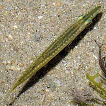
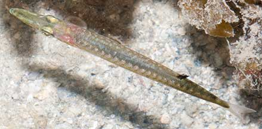
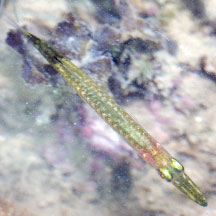
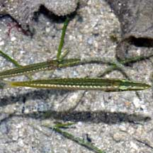
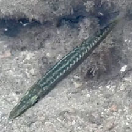

|
|
| fishes text index | photo index |
| Phylum Chordata > Subphylum Vertebrate > fishes |
| Barracudas Family Sphyraenidae updated Oct 2020 Where seen? Very young ones are stick-like and sometimes in seagrass meadows near reefs. Elsewhere, juvenile barracudas are found in mangroves or river estuaries. What are barracudas? Barracudas belong to the Family Sphyraenidae. According to FishBase: the family has 1 genera and 18 species. They are found in the Atlantic, Indian and Pacific Oceans. Tropical and subtropical. Distribution: Atlantic, Indian, and Pacific Oceans. Features: Enormous adults are found in deeper water. Those seen on the intertidal are juveniles usually 5-8cm long. Body short and cylindrical with regular pale bars on a greenish or olive background. Large eyes. Both jaws seem to be about the same length, the upper jaw only a little shorter than the lower jaw. It has a forked tail and the dorsal fins are far apart and well separated. Sometimes mistaken for halfbeaks. Halfbeaks have an upper jaw that is much shorter than the lower jaw. Here's more on how to tell apart stick-like fishes commonly seen on our shores. |
 Tanah Merah, Aug 09 |
|
 Pulau Semakau, Aug 11 |
 Upper and lower jaws about the same length. |
| Surface dwellers: It is well adapted
to living at the water surface. Usually darker on the top while the
sides and underside are silvery. Thus its darker blue or green back
blends in with the water surface when above-water predators look down
on it. While at the same time, underwater predators looking up at
it can't really see it well either as its silvery body blends with
the sunlit waters. Its unfish-like body shape also means it is often
dismissed as a floating stick. Some small ones are brown and twig-like. What do they eat? These juveniles grow up to be voracious predators more than 1m long. The adults hunt other fishes and adults may even attack humans with their strong jaws which are full of sharp fang-like teeth. Barracuda babies:The adults may be found near coastal reefs and they spawn in schools. Human uses: Barracudas are prized as food and game fishes, but large specimens may be toxic (ciguatoxic). |
| Baby barracudas on Singapore shores |
On wildsingapore
flickr
|
| Other sightings on Singapore shores |
 Kusu Island, May 10 Photo shared by Marcus Ng on flickr. |
|
 Pulau Semakau, Apr 08 Photo shared by Marcus Ng on his flickr. |
 Pulau Semakau (South), Dec 24 Photo shared by Eugene Tan on facebook. |
| Family
Sphyraenidae recorded for Singapore from Wee Y.C. and Peter K. L. Ng. 1994. A First Look at Biodiversity in Singapore. in red are those listed among the threatened animals of Singapore from Ng, P. K. L. & Y. C. Wee, 1994. The Singapore Red Data Book: Threatened Plants and Animals of Singapore.
|
Links
|